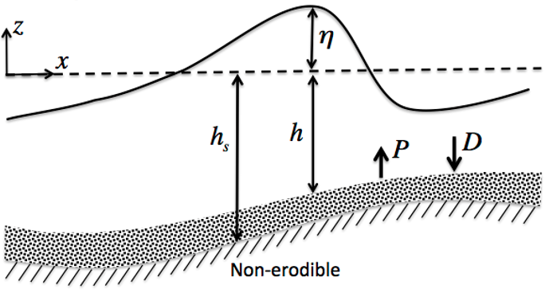

Sediment Transport Module¶
Module framework:
{kind=link}
Fundamental equations¶
Depth-averaged sediment concentration equation
(58)¶\[(\bar{c}H)_{t} + \nabla_{h} \cdot (\bar{c}H(\textbf{u}_{\alpha} + \bar{\textbf{u}}_2)) = \nabla_{h} \cdot (kH(\nabla_{h}\bar{c})) + P - D\]
Pick up function (van Rijn 1984):
(59)¶\[P = 0.015\frac{d_{50}}{a} \left( \frac{|\tau_b|-\tau_{cr}}{\tau_{cr}} \right)^{1.5} d_{*}^{-0.3} \omega_{f}, \ \ \ \ \ |\tau_b| > \tau_{cr}\]
Deposition rate (Cao 1999):
(60)¶\[D = \gamma \bar{c} \omega_{f} (1-\gamma\bar{c})^{m_o}\]
Bedload formula
Meyer-Peter and Muller (1948):
(61)¶\[q_b = \frac{8 [(\tau_b - \tau_{cr}^b) / \rho_{\omega}]^{3/2}}{g(s-1)}\]
Bed evolution equation
(62)¶\[\frac{dZ_{b}}{dt} = \frac{1}{1-n} (D-P-\nabla \cdot \overrightarrow{q}_b )\]

{kind=link}
DETAILS¶
- Suspended Sediment Transport Equation (Non-cohesive)
- Suspended Sediment Transport Equation (Cohesive)
- Bedload Sediment Transport
- Morphological Evolution
- Hydrodynamic Correction for High Concentration Sediment
- Slope Limiting Methodology
- Non-erodible Bed
- Numerical Scheme for Sediment Transport
- Ship Propeller Effects on Sediment Transport
APPLICATIONS¶
References
Cao, Z., (1999). “Equilibrium Near-Bed Concentration of Suspended Sediment”. J. of Hydraulic Eng., 125 (12). DOI: 10.1061/(ASCE)0733-9429(1999)125:12(1270).
Meyer-Peter, E., and Muller, R., (1948). “Formulas for Bed-Load transport”. Hydraulic Eng. Reports: IAHSR 2nd meeting, Stockholm, Appendix 2. IAHSR.
van Rijn, L.C., (1984). “Sediment Pick-Up Functions”. J. of Hydraulic Eng., 110 (10). DOI: 10.1061/(ASCE)0733-9429(1984)110:10(1494).